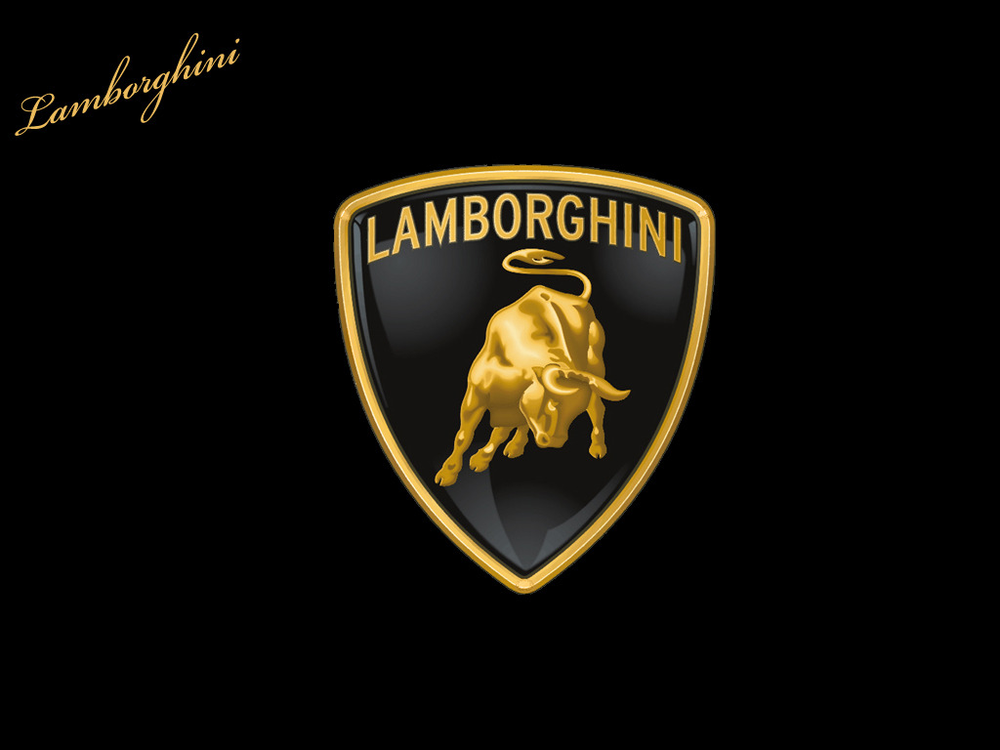
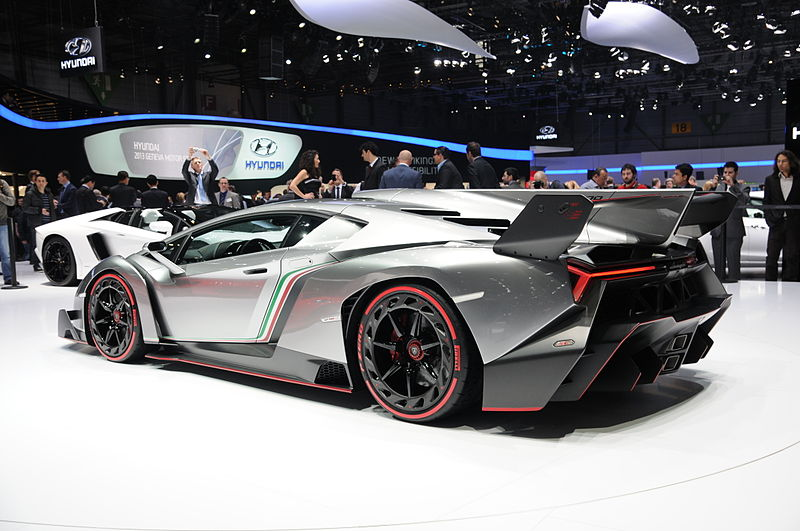

Automobili Lamborghini S.p.A. is an Italian manufacturer of luxury sportscars which is owned by Volkswagen Group through its subsidiary Audi. Lamborghini's production facility and headquarters are located in Sant'Agata Bolognese, Italy. In 2011, Lamborghini's 831 employees produced 1,711 vehicles.
Manufacturing magnate Ferruccio Lamborghini founded Automobili Ferruccio Lamborghini S.p.A. in 1963 with the objective of producing a refined grand touring car to compete with offerings from established marques such as Ferrari. The company's first models were released in the mid-1960s and were noted for their refinement, power and comfort. Lamborghini gained wide acclaim in 1966 for the Miura sports coupé, which established rear mid-engine, rear wheel drive as the standard layout for high-performance cars of the era.
Lamborghini grew rapidly during its first decade, but hard times befell the company when sales plunged in the wake of the 1973 worldwide financial downturn and the 1973 oil crisis. The firm's ownership changed three times after 1973, including a bankruptcy in 1978, before Chrysler Corporation took control in 1987. Unable to operate Lamborghini profitably, Chrysler sold Lamborghini to Malaysian investment group Mycom Setdco and Indonesian group V'Power Corporation in 1994. Lack of success continued through the 1990s, until Mycom Setdco and V'Power sold Lamborghini to the AUDI AG subsidiary of Volkswagen Group on 27 July 1998. Audi's ownership marked the beginning of a period of stability and increased productivity for Lamborghini. Sales increased nearly tenfold over the course of the 2000s, peaking with record sales in 2007 and 2008. The world financial crisis in the late 2000s negatively affected all luxury car makers worldwide, and caused Lamborghini's sales to drop nearly 50 percent.
Lamborghini's Sant'Agata Bolognese production facility produces V12 engines and finished automobiles. Lamborghini's current production vehicles are the V10-powered Gallardo and the V12-powered Aventador. Both production models are available in a variety of regular and limited-edition specifications.